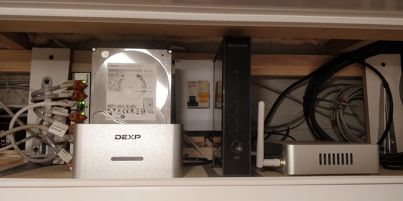

Про профдеформацию

Вчера мучался с настройкой сетевой связности между ЦОДом одной компании и подсетью телеком оператора на объекте. Бриджи, туннели, роутинг и вот это всё. Сегодня под утро уже приснился сон, перед тем, как жена разбудила. Решил поделиться с вами. :)
Приходим мы с женой в ЗАГС регистрировать ребёнка, а нам тётка и говорит - выдадим вам тридцатую подсеть, будет у вас четыре айпишника - адрес сети, где ребёнок с мамой прописан, широковещательный и два айпишника как раз остаются маме и ребёнку.
Я: - Эй, а я? А как же я?
Тётка: - А что ты? Много ты участия в этом процессе принимал? Она его вынашивала, рожала, ночами не спит. Может вам 29ю подсеть выделить? Куда ещё 3 адреса денете? Я не верю, что вы четверо детей планируете, а с адресами у нас и так дефицит. Ничего, за натом посидишь, сам себе там подсеть выдели серую, найдёшь оборудование.
На этом моменте я проснулся.
Теги: fun, networking
Простая и быстрая настройка mesh VPN с помощью tinc

Периодически сталкиваюсь с какими-то программными продуктами, которые существуют уже много лет, удобны, легки, просто работают, но я о них по какой-то причине не слышал на протяжении всего времени их существования. На этой неделе открыл для себя tinc. Если кратко, то tinc - это vpn, который позволяет объединить несколько машин друг с другом, где каждая будет обмениваться при необходимости данными с каждой, т.е. не будет единой точки отказа. Чем прекрасен именно этот вариант - он требует минимальной настройки, конфигурационные файлы очень просты, создание ключа - тоже. Типичный сценарий для использования tinc - несколько географически удалённых филиалов одной сети. Поднимаем на двух машинах бридж, выдаём ему нужный локальный адрес, tinc поднимает tap или tun интерфейс, при создании/уничтожении интерфейса запускает скрипт, в который передаёт имя интерфейса, что позволяет добавить его в бридж или удалить из него. Всё просто работает, но есть один нюанс, о котором я расскажу ниже.
Теги: админское, networking
Автоматическая перезагрузка OpenWRT роутера при отсутствии интернета N секунд
У меня дома подключен интернет от Beeline, но периодически с ним возникают проблемы. Что тому виной - не могу понять. Периодически коннект разрывается, роутеру выдаётся по DHCP новый IP адрес, l2tp отрабатывает, получает свой адрес, но до шлюза через l2tp интерфейс пакеты идут только в одну сторону. Обратно приходит порядка 60 байт чего-то (не успел поймать), затем тишина. Решил написать небольшой простой скрипт, который будет проверять интернет и если его нет более 5ти минут, будет перезагружать роутер.
Теги: shell, networking, openwrt
Скрипт для обновления DNS записей CloudFlare

Пост называется "опять не спится" или "как бесплатно завернуть домен второго уровня на ваш домашний динамический IP адрес". Для чего это вам может быть нужно? Вариантов много. Например, это возможность впоследствии поднять дома какие-нибудь сервисы. Например, создать собственное облако для хранения и расшаривания файлов и смотреть в пути фильмы, лежащие на домашнем жёстком диске или развернуть личный блог, сайт-визитку, сервис умного дома, да хоть устроить станцию онлайн вещания - всё ограничивается вашей фантазией, вариантов использования может найтись масса, когда существует возможность.
Теги: shell, automatization, networking, админское
Про оптимизацию, тишину, эволюцию, нестандартные решения и домашнюю сеть.

Достаточно давно я собрал свой первый домашний сервер. И довольно много сил я тогда положил на то, чтобы сделать его как можно более тихим, маленьким и потребляющим минимум энергии. Я сменил радиаторы на процессеоре и северном мосту с целью увеличить площадь рассеивающей поверхности. Я искал самые тихие кулеры, я занижал частоту процессора, я сменил кулер в блоке питания и жёсткий диск я выбирал тоже исходя из теж же требований - тихий и потребляющий минимум энергии. В конце-концов, я переместил свой сервер в диван. Мне тогда нужна была платформа для экспериментов и само-собою подразумевалось, что она будет работать 24 часа, 7 дней в неделю.
Зачем ненормальному человеку может быть нужен сервер? Во-первых, это файлопомойка; во-вторых, это медиакомбайн, соединённый с музыкальным центром и имеющий доступ ко всем твоим аудиозаписям, а заодно и к нескольким десяткам онлайн радиостанций; в-третьих файрвол, позволяющий тонко управлять различными подключениями и роутингом между двумя провайдерами и рабочей сетью; в-четвёртых - VPN; в пятых... Продолжать можно долго.
Теги: админское, automatization, networking, python
АСПЕКТЫ НАСТРОЙКИ СЕТИ В QEMU. ОБЪЕДИНЕНИЕ ИНТЕРФЕЙСОВ НА КАНАЛЬНОМ УРОВНЕ.
Это репост статьи от новогодней ночи 31 декабря 2008г. - 1 января 2009г.
Доброго времени суток. Вечер. 31 декабря 2008 года. Чем заняться человеку в такое время? Правильно! Начать писать статью на permlug, чтобы поделиться опытом. :)
Теги: virtualization, qemu, networking, админское